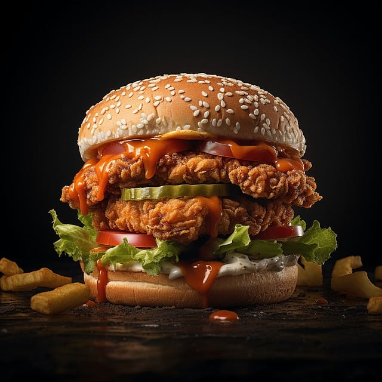

selbstgemachten Chickenburger
| 450 | gr Mehl |
| 2 | TL Salz |
| 40 | gr Butter |
| 200 | ml Milch |
| 1 | Pck Trockenhefe |
| Wasser zum besprühen | |
| Sesam zum bestreuen | |
| 1200 | gr Hänchenbrustfillet |
| 2 | Eier Größe L |
| reichlich Mehl | |
| Cornflakes |
Zubereitung
Burger Buns
Zuerst die Butter in einem Topf schmelzen lassen, sobald die Butter geschmolzen ist die Milch und die Hefe dazu geben (wichtig nicht kochen lassen)
Nun das Mehl in eine Schüssel geben und das Butter Gemisch unterrühren und den ganzen Teig gut verkneten.
Nach dem vermengen den Teig für 30-45 Minuten ruhen lassen
Nun den Teig auf eine bemehlte Fläche geben und 6-8 Burgerbrötchen daraus schneiden und leicht flach drücken. Diese dann abgedeckt nochmal 30 Minuten gehen lassen
Die Teiglinge auf ein Backblech geben etwas Sesam mit hilfe von Wasser auf die Brötchen streuen und bei 180°C Ober-Unterhitze für 15-30 Minuten backen lassen
Chicken Pattys
Die Hähnchenbrust nach und nach in den Mixer geben und zerkleinern, Danach das zerkleinerte Hähnchen in Portionsgrößen mit je 150 - 200 gr abwiegen.
Danach die Portionen mit dem Burgermaker platt drücken und durch die Panierstraße geben
Am Ende in Öl raus frittieren oder in einer Pfanne mit reichlich Öl beidseitig rausbraten und servieren